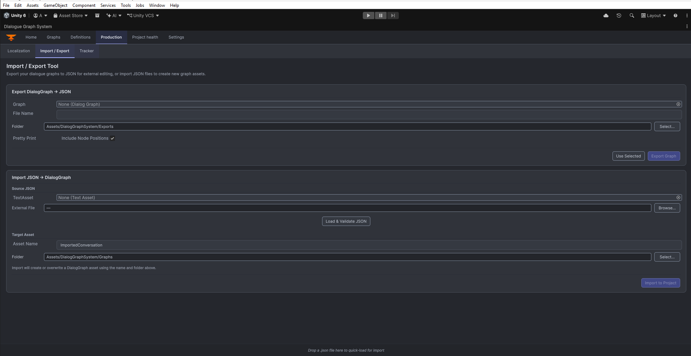

JSON Import and Export
The Production workspace exports graph JSON and validates an import preview before it creates or replaces a graph asset. Keep your original graph and review the result after every import.
Key files
ImportExportEmbedded.cs(the current workspace UI)DialogGraphJsonSerializationUtility.csandDialogGraphImportTransactionService.csDialogJsonImportBridge.cs
Editor entry point
Open Tools > Beka Forge > Dialogue Graph System > Open Editor, select Production, then choose the Import / Export subtab. The embedded tool has Export and Import cards.

Export workflow
Choose a DialogGraph, enter an output filename and an in-project destination, then use Pretty Print and Include Node Positions as needed. Confirm the overwrite prompt before replacing an existing JSON file. Export is graph data, not a Unity package or complete project backup.
Import workflow
Select a TextAsset or browse to an external JSON file, set the destination folder and name, then click Load & Validate JSON. Review the preview and validation messages before Import to Project. A new import creates an independent copy. If that destination name already exists, read the prompt carefully: create a copy or explicitly confirm overwrite. The lower-level importer also supports identity-preserving Restore for a matching existing target; that specialized mode is not needed for ordinary reuse.
Import bridge
DialogJsonImportBridge is an editor API that validates the DTO and executes an import transaction. The UI previews content and reports import stages or refusals. It rebuilds supported graph and node data and selects the resulting asset; open it in Graphs to inspect it. Treat external JSON as untrusted and do not overwrite a valuable graph without a backup.
Best practices
- export graphs before making large structural edits
- keep imported JSON under review if it comes from external tooling
- keep a separate backup before overwriting an existing graph
- use an independent copy for ordinary reuse; reserve identity-preserving Restore for recovery of a matching existing target
- revalidate graph references after import